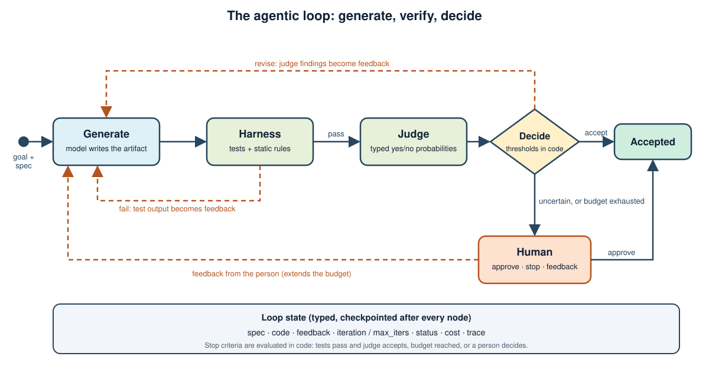
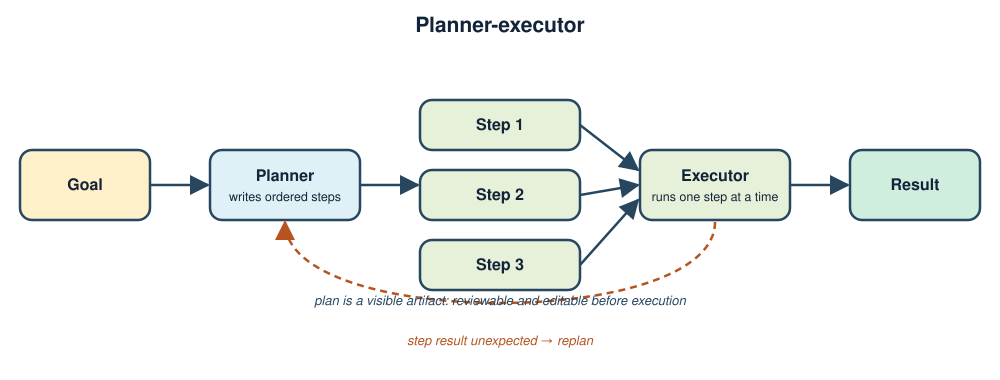
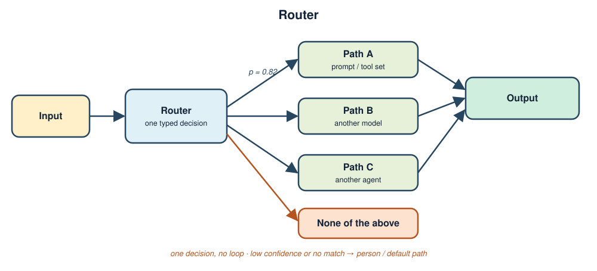
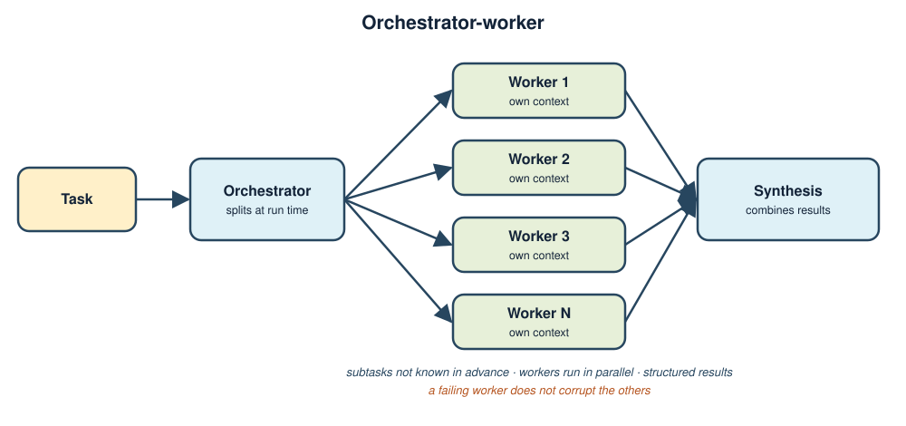
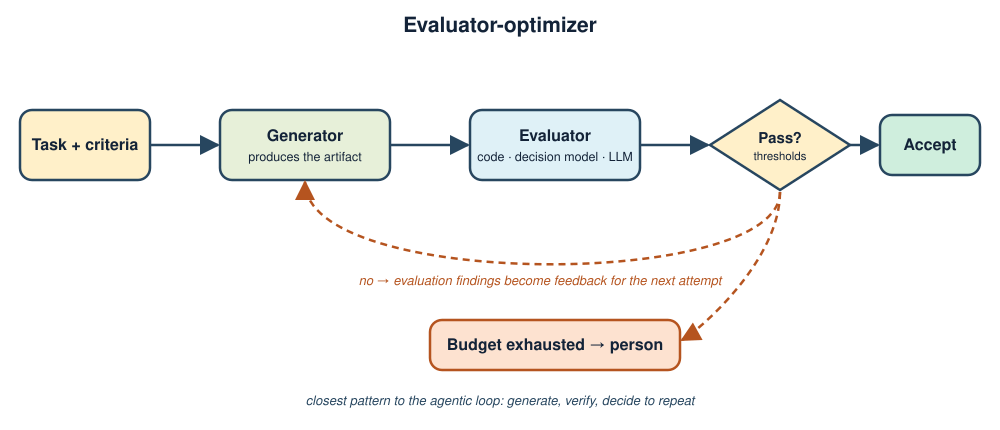

1. Learning outcomes
1.1 Designing loops that terminate
- Distinguish chains, deterministic workflows, agents, and multi-agent systems by who controls the next step.
- Define the agentic loop and name its stages: goal, plan, act, verify, decide.
- Specify state, entry criteria, stop criteria, and repeat criteria before writing any prompt.
- Choose between planner-executor, router, orchestrator-worker, and evaluator-optimizer.
- Implement a bounded loop in LangGraph with conditional edges, checkpoints, and a human interrupt.
2. Topics
2.1 From definition to a running loop
The module defines the loop, decomposes it into state and criteria, maps the standard orchestration patterns onto it, covers retries, parallelism, and memory, and ends with a complete loop that repairs a failing function until its tests pass.
3. From chains to agentic loops
3.1 Four levels of control
Applications that call a language model differ mainly in who decides the next step. The decision can be fixed in code, taken by the model inside one task, or distributed across several models.
| Level | Who chooses the next step | Typical use | Main risk |
|---|---|---|---|
| Chain | The developer, as a fixed sequence | Prompt, call, parse | Cannot adapt to unexpected input |
| Deterministic workflow | The developer, with branches and loops written in code | Routing, validation, retries around known steps | Branches multiply as cases grow |
| Agent | The model, choosing tools and when to stop | Open-ended tasks with verifiable outcomes | Unbounded cost and unpredictable paths |
| Multi-agent system | Several models with separate roles and contexts | Work that splits into independent specialties | Coordination overhead and error propagation |
Moving down the table trades predictability for flexibility. The correct level is the lowest one that solves the task.
3.2 Definition of the agentic loop
An agentic loop is a controlled repetition in which a system pursues a goal by cycling through five stages until an explicit completion criterion is met or a budget is exhausted.
- Goal: a specification of what must be true when the work is complete.
- Plan: the next action or set of actions, chosen from the current state.
- Act: execution through tools, code, or specialized agents.
- Verify: evidence about the result, produced by something other than the actor wherever possible.
- Decide: stop, repeat with feedback, or hand over to a person.
The defining property is that the verification result changes what happens next. A pipeline that always runs the same steps is a workflow; a loop reads its own outcome and decides.

3.3 When a loop is the wrong tool
A loop adds latency, cost, and variance. It is justified when two conditions hold: the first attempt is often wrong, and correctness can be checked cheaply and reliably. When the task is a known sequence, a workflow is simpler and cheaper. When correctness cannot be checked, repetition only produces more confident errors, so the loop needs a person as the verifier.
4. Anatomy of a loop
4.1 State
State is the only memory that survives between iterations, so it must hold everything the next decision needs and nothing else. A typed schema makes this explicit and lets the framework checkpoint it.
- Inputs: the goal or specification, which no node should modify.
- Working data: the current artifact, such as the draft or generated code.
- Feedback: the verification result that the next attempt must address.
- Control data: iteration counter, budget, status, and accumulated cost.
- Trace: an append-only record of what each node did, used for observation and audit.
4.2 Entry criteria
Entry criteria decide whether a loop should start at all. Typical checks are that the goal is specific enough to verify, that the required tools and credentials exist, and that the request is inside the permitted scope. A request that fails these checks should be rejected or clarified before any model is called, because a loop started on an unverifiable goal cannot terminate meaningfully.
4.3 Stop criteria
Every loop needs more than one way to end. The criteria are evaluated by code, not by the model that is doing the work.
| Stop reason | Condition | Outcome |
|---|---|---|
| Success | The verifier reports that the completion criteria are met | Accept the artifact |
| Budget | The iteration, token, time, or cost limit is reached | Escalate to a person or fail explicitly |
| No progress | The same failure repeats, or the artifact stops changing | Escalate; further iterations will not help |
| Uncertainty | The verifier cannot decide with enough confidence | Ask a person |
| Unsafe action | The next step is irreversible or outside the scope | Require approval before continuing |
4.4 Repeat criteria and feedback
When the loop does not stop, the quality of the feedback determines whether the next iteration improves. Feedback should name the specific failing check and quote its output, not state a general instruction to try again. A failing test report that names the assertion and the observed value gives the next attempt something to fix; the message "the result was wrong" does not.
Feedback also needs a limit. Passing the complete history of every attempt grows the context and anchors the model on its own earlier mistakes. Passing only the latest failure keeps the context small and focused.
5. Orchestration patterns
5.1 Planner-executor
A planner produces an ordered list of steps from the goal; an executor carries them out one at a time. The plan is a visible artifact that can be reviewed or edited before execution. The pattern fits tasks with a predictable shape, and it should include a replanning step, because a plan written at the start is wrong as soon as a step returns something unexpected.

5.2 Router
A router classifies the input and sends it to one specialized path: a prompt, a tool set, a model, or another agent. The router makes a single decision and does not loop. Its quality is the quality of its classification, so it benefits from a typed output with an explicit "none of the above" option and a rule for low confidence.

5.3 Orchestrator-worker
An orchestrator decomposes the task at run time, delegates the parts to workers, and combines their results. It differs from planner-executor because the subtasks are not known in advance and can run in parallel. Workers should receive only the context they need and return a structured result, so that one worker's failure does not corrupt the others.

5.4 Evaluator-optimizer
One component produces an artifact and another evaluates it against explicit criteria; the evaluation feeds the next attempt. This is the pattern closest to the agentic loop itself: generation, verification, and a decision to repeat. It works when criteria are clear and when revision improves the result. The evaluator may be deterministic code, a language model, a specialized decision model, or a person, and the strongest designs combine several of them.

5.5 Specialized roles
| Role | Responsibility | Context it needs |
|---|---|---|
| Orchestrator | Decomposes the goal, assigns work, merges results, applies stop criteria | Goal and summaries of results |
| Worker | Produces one artifact for one subtask | Its subtask and the relevant inputs |
| Reviewer | Judges the artifact against the specification | Specification and artifact, not the worker's reasoning |
| Tester | Runs executable checks and reports facts | Artifact and a test suite the worker cannot modify |
| Documenter | Records decisions, changes, and open points | Final artifact and the trace |
Roles are separated to keep contexts small and to prevent a component from grading its own work. A role that only changes the system prompt of the same model, with the same context, adds cost without adding independence.
6. Implementing a loop with LangGraph
6.1 State and nodes
The state is a typed dictionary. Fields that several nodes append to, such as the trace, declare a reducer so that updates are merged instead of overwritten.
import operator
from typing import Annotated, TypedDict
class LoopState(TypedDict, total=False):
spec: str
code: str
feedback: str
iteration: int
max_iters: int
tests_passed: bool
status: str # running | accepted | stopped
cost_usd: float
trace: Annotated[list[dict], operator.add]Each node is a function that receives the state and returns only the fields it changes. The loop in this module has four working nodes: generate produces the artifact, harness runs the executable checks, judge answers typed questions about what the checks cannot cover, and human asks a person.
Code: the generator contract · llm_generate · LoopState · n_generate · n_harness · n_judge · n_finish
6.2 Conditional edges as loop control
The loop exists in the graph as an edge that returns to an earlier node. A routing function reads the state and names the next node, which keeps all stop and repeat logic in ordinary, testable code.
def after_harness(state: LoopState) -> str:
if state["tests_passed"]:
return "judge"
if state["iteration"] < state["max_iters"]:
return "generate" # repeat with the failure as feedback
return "human" # budget exhausted: escalate
g = StateGraph(LoopState)
g.add_edge(START, "generate")
g.add_edge("generate", "harness")
g.add_conditional_edges("harness", after_harness, ["judge", "generate", "human"])
g.add_conditional_edges("judge", after_judge, ["finish", "human", "generate"])
g.add_conditional_edges("human", after_human, ["generate", "finish"])
g.add_edge("finish", END)
graph = g.compile(checkpointer=MemorySaver())The iteration counter is incremented by generate and compared with max_iters in every routing function that can return to it. A loop without this comparison has no guaranteed end.
Code: after_harness · after_judge · after_human · graph wiring and MemorySaver · judge thresholds
6.3 Checkpoints and human interrupts
Compiling the graph with a checkpointer saves the state after every node. This enables three behaviors: resuming after a crash, inspecting a past step, and pausing for a person. A node pauses the run by calling interrupt; the run resumes when the caller sends a value back.
from langgraph.types import Command, interrupt
def n_human(state: LoopState) -> dict:
answer = interrupt({
"question": "Approve this code? Reply 'approve', 'stop', or write feedback.",
"iteration": state["iteration"],
"code": state["code"],
})
if str(answer).strip().lower() == "approve":
return {"status": "accepted"}
if str(answer).strip().lower() == "stop":
return {"status": "stopped"}
return {"feedback": f"Human feedback: {answer}", "status": "running",
"max_iters": state["max_iters"] + 2} # a note buys two more attempts
# resume the paused run
graph.stream(Command(resume="approve"), {"configurable": {"thread_id": "run"}})The person is asked only in two cases: the evaluator is uncertain, or the budget is exhausted. Asking on every iteration turns the loop into a manual process and removes the benefit.
7. Reliability inside the loop
7.1 Errors and retries
Two kinds of failure require different handling. A technical failure is a timeout, a rate limit, or a malformed response; it is usually transient and can be retried with exponential backoff. A semantic failure is a well-formed result that does not meet the criteria; repeating the identical request returns the identical result at temperature zero, so the retry must change something, typically by adding the failure as feedback.
- Retry only operations that are safe to repeat, or make them idempotent with a key.
- Bound every retry by count and by elapsed time.
- Surface exhausted retries as errors. An API failure must never be converted into a negative answer such as "no".
- When a model omits part of a requested structure, ask again for only the missing part instead of repeating the whole request.
Code: backoff on 429/529 and errors raised · re-asking only the missing questions · HarnessReport.feedback · run_harness · static_checks
7.2 Parallelization
Independent subtasks can run concurrently, and independent checks on the same artifact can be evaluated together. LangGraph supports fan-out by returning several sends from a routing function, with a reducer on the receiving state field to merge the results. Parallel branches should not share mutable state, and the join step must define what happens when one branch fails: wait, continue with partial results, or fail the whole step.
7.3 Memory and context across iterations
Short-term memory is the loop state and the message history of the current run. It grows with every iteration, so the loop should summarize or drop old messages and keep the latest feedback verbatim. Long-term memory is a store that persists across runs, holding facts, preferences, or lessons learned. It should be read at the start of a run and written only through an explicit step, so that a bad iteration cannot silently corrupt it.
Tool use follows the same principle of least context. Each iteration should see only the tools relevant to its stage, with descriptions that state when not to use them.
Related code: CascadeJudge · escalating_generate
8. Worked example: repairing a payment-retry function
8.1 The task
The goal is a function that authorizes a payment, retries on transient gateway errors, stops as soon as a request is approved, and returns a failure with a suggestion for an alternative payment method after three transient errors. A written specification states these requirements as three acceptance scenarios, and a test suite encodes them. The starting code is deliberately incomplete: it makes a single attempt.
8.2 The harness as the stop criterion
The generating model may modify only one file. The test suite is copied from a read-only location into a fresh temporary directory next to the candidate file on every run, so the model cannot make a test pass by editing it. Static checks reject behavior outside the specification, such as sleeping between attempts, importing network libraries, or running processes.
Test results are the hard completion criterion. An evaluator answers two typed questions that tests cannot settle, each as a probability: does the code implement the specification exactly, and does it add behavior that the specification does not request. The routing function applies thresholds to those probabilities:
ACCEPT, REJECT = 0.7, 0.3
def judge_decision(p_spec_ok: float, p_scope_creep: float) -> str:
if p_spec_ok >= ACCEPT and p_scope_creep <= REJECT:
return "accept"
if p_spec_ok <= REJECT or p_scope_creep >= ACCEPT:
return "revise"
return "unsure" # goes to a person8.3 Reading a trace
Every node appends a record to the trace, so a run can be reviewed afterwards without rerunning it. A run with a hosted model as both generator and evaluator produced the following trace.
| Iteration | Node | Result |
|---|---|---|
| 1 | generate | 1,577 characters, 9.7 s, USD 0.0009 |
| 1 | harness | Pass, three tests, no static violations |
| 1 | judge | P(specification met) 0.96, P(scope creep) 0.07, decision accept |
The run stopped after one iteration at a total cost of USD 0.0016. A capable model often passes at once, so the repair path is exercised in the automated tests with a scripted generator that first returns the failing starter and then a correct version: the first harness run fails, the failure text is passed to the second generation, and the second run passes. The same suite covers an uncertain evaluator that sends the run to a person, a person who stops the run, and an exhausted budget that escalates.
To observe the repair path with a real model, use a small local model as the generator: when its first attempt fails, the cost of the loop appears as additional iterations instead of a more expensive model.
9. Guided lab
9.1 Run the loop
The code is in the chapter 14 directory of the companion repository. Create an environment, run the offline tests, then run the loop against a model of choice.
cd ch14
python3 -m venv .venv && .venv/bin/pip install -r requirements.txt
.venv/bin/python -m pytest -q tests
LLM_PROVIDER=ollama OLLAMA_MODEL=gemma4:e4b .venv/bin/python agentic_loop.py --human ask
LLM_PROVIDER=deepseek .venv/bin/python agentic_loop.py --human ask9.2 Observe the control flow
- Read the printed trace and identify, for each record, which routing function chose the next node.
- Run with
--max-iters 1and a small local model; if its first attempt fails the tests, the exhausted budget escalates to the human prompt. - At the human prompt, reply with a sentence of feedback and observe that the budget is extended by two iterations.
9.3 Break it on purpose
- Add a test to the case directory that the starter and the reference both fail, and observe which stop criterion ends the run.
- Remove the comparison with
max_itersfrom one routing function and describe the failure mode this introduces. - Add a static rule that forbids a new behavior and observe that a passing test suite does not override it.
10. Source map
10.1 Primary references
11. Key takeaways
11.1 Design rules
- Use the lowest level of control that solves the task; add a loop only when the first attempt is often wrong and correctness is cheap to check.
- Define state, entry criteria, stop criteria, and feedback before writing prompts.
- Give every loop several independent ways to end and an explicit iteration budget.
- Evaluate the stop criteria in code and base them on evidence the generating component cannot alter.
- Ask a person only when the evaluator is uncertain or the budget is exhausted.
- Retry technical failures with backoff; answer semantic failures with specific feedback.